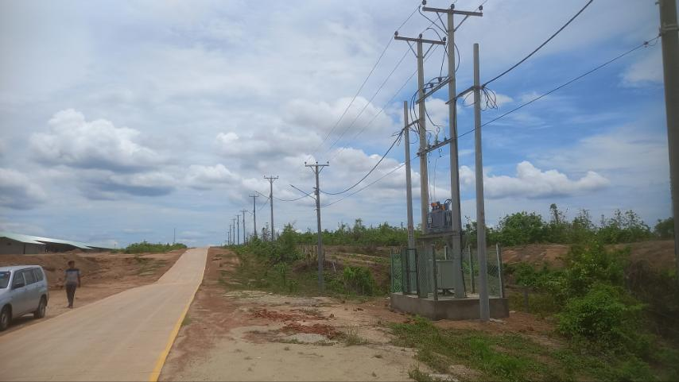
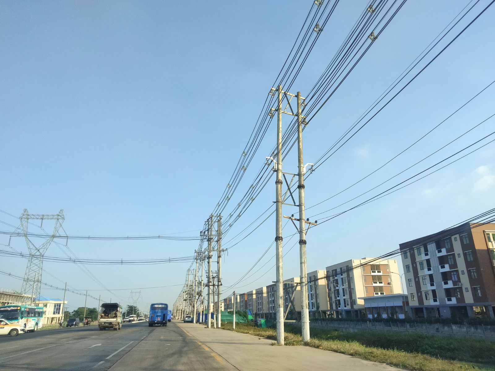
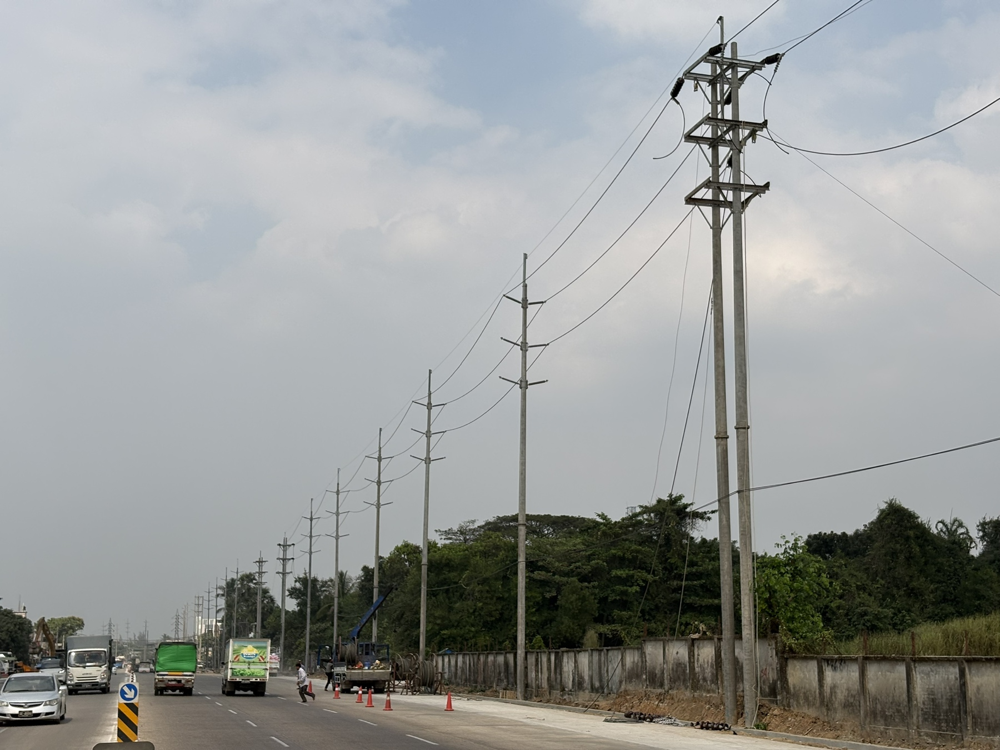

Four featured case studies from my CV and resume, followed by additional project experience.
FEATURED PROJECTS
Core case studies
4 CASE STUDIES FROM CV / RESUME
01 / POWER SUPPLYYANGON · 2023

ASSET CONTEXT / TRANSFORMER + FEEDER
33/11 kV2 × 1,000 kVA2 sites
Highway toll-gate supply
Coordinated electrical supply infrastructure for two toll-gate facilities ahead of the highway opening.
02 / UTILITY RELOCATIONTHILAWA PORT
ASSET CONTEXT / OVERHEAD LINE CORRIDOR
33 kV11 km10+ bids
Thilawa 33 kV line relocation
Tendering and bid review for a triple-circuit line relocation interfacing with major road reconstruction.
03 / PUBLIC INFRASTRUCTUREYANGON · 2023–2025

ASSET CONTEXT / URBAN NETWORK
5 townships40+ contractors0 LTI
Citywide street-lighting upgrades
Supported multi-township night works, installation monitoring, safety coordination, and handover documentation.
04 / COMMERCIAL CONNECTIONYANGON · MAR–JUL 2025

ASSET CONTEXT / ROAD-SIDE POWER WORK
Route reviewAccess liaisonAs-built
Terminal M power connection
Coordinated route access, design changes, and interfaces to complete a new distribution connection for a commercial development.
Field photographs are contextual visuals of relevant equipment and environments, not verified as-built photographs for each named project.
ADDITIONAL PROJECT EXPERIENCE
Broader infrastructure work
Other projects listed in the CV/resume, shown after the featured case studies.
2021–2023
Inno City Power Infrastructure
Supported electrical supply delivery for condominium towers and a shopping complex, including site coordination, records, installation monitoring, and handover support.
RESIDENTIAL + COMMERCIAL2022–2024
68 Residence Condominium
Supported project restart and closeout planning through status review, schedule and risk updates, permit coordination, drawing revisions, inspection, and as-built documentation.
PROJECT RECOVERY + HANDOVER2021–2024
Hlegu–Inndine Housing Area Line
Contributed to route planning and overhead line construction coordination, surveys, materials, permits, authority and resident liaison, monitoring, and handover.
 ASSET CONTEXT / OVERHEAD LINE CORRIDOR
ASSET CONTEXT / OVERHEAD LINE CORRIDOR